Le module Articles multiples de la fonctionnalité Site Web permet d'afficher un nombre d'articles selon différents modes d'affichage, avec ou sans lien, vers la page détail des articles.
Ce module peut être utile, par exemple, pour afficher des articles de blogue ou bien pour ajouter une section FAQ à votre site web.

Configuration générale du module
| Option | Description |
|---|---|
| Mode d'affichage | Permet de choisir entre le mode Accordéon, Blogue, Mosaïque ou Liste des actualités à gauche ou à droite. |
| Nombre d'articles | Permet de décider du nombre d'articles qui seront affichés parmi tous ceux de la catégorie, selon l'ordre d'affichage choisi |
| Ordre d'affichage | Permet de contrôler le mode d'affichage des articles sur votre page :
|
| Option | Description |
|---|---|
| Catégorie | Permet de sélectionner de quelles catégories proviennent les articles affichés dans ce module (vous pouvez décider d'inclure toutes les catégories) |
| Mots-clés | Permet de sélectionner les articles affichés par mots-clés. Vous pouvez choisir aucun ou plusieurs mots-clés. |
| Groupes | Permet de sélectionner les articles affichés par groupes. Vous pouvez choisir aucun ou plusieurs groupes. |
| Archives | Permet de contrôler si les articles affichés incluent, n'incluent pas ou incluent seulement les articles archivés. |

| Option | Description |
|---|---|
| Affichage des éléments de la page détail | Permet de choisir quels éléments de l'article seront visibles à partir de la page détail de l'article en question |

| Option | Description |
|---|---|
| Permettre de filtrer par catégorie | Permet à l'utilisateur de filtrer les articles affichés en choisissant une catégorie dans la liste des catégories. Utile seulement lorsque des articles provenant de toutes les catégories sont affichés. |
| Permettre de filtrer par catégorie | Permet à l'utilisateur de filtrer les articles affichés en choisissant un ou plusieurs mots-clés dans la liste des mots-clés. |
Configuration spécifique aux différents modes d'affichage
Chaque mode d'affichage permet une configuration différente propre à leur fonctionnement.
MODE ACCORDÉON
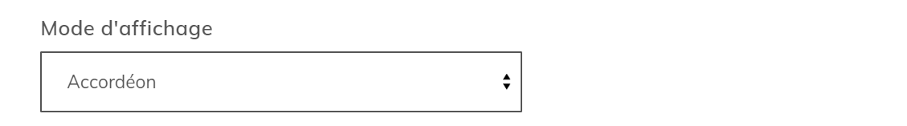
Ce mode permet l'affichage des articles sous forme de liste et permet de les ouvrir ou de les fermer pour afficher ou cacher leur contenu. Dépendamment de ce que vous choisissez d'afficher, le titre, la date de création, l'introduction, la catégorie et l'auteur seront visibles sur l'article fermé. Le contenu de l'article, les mots-clés et les groupes associés sont visibles sur l'article ouvert.
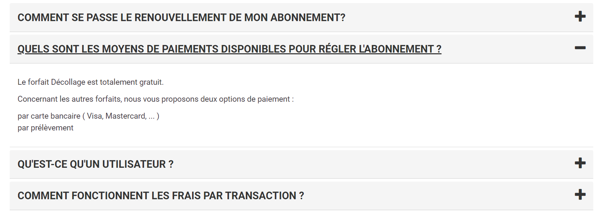
Dans la configuration, vous pouvez choisir si, par défaut, les articles sont ouverts ou fermés. S'ils sont fermés, vous pouvez également choisir d'ouvrir le premier article automatiquement. Dans tous les cas, l'utilisateur de votre site web pourra les ouvrir et les fermer à sa guise.
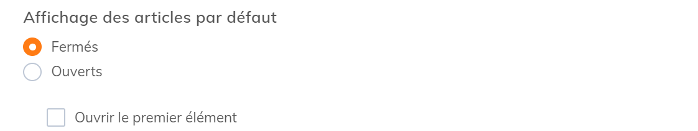
Ce mode est particulièrement utile pour créer des sections FAQ.
MODE BLOGUE
Le mode blogue permet l'affichage les articles sous forme de liste et présente un bouton qui permet la redirection vers une page détail contenant l'article spécifique.
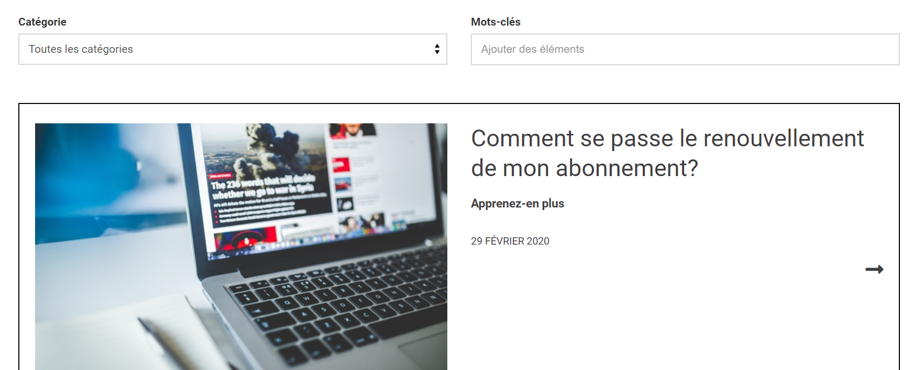
Sa configuration permet également d'afficher un article en vedette. Selon l'ordre d'affichage choisi, le premier article sera mis en évidence.
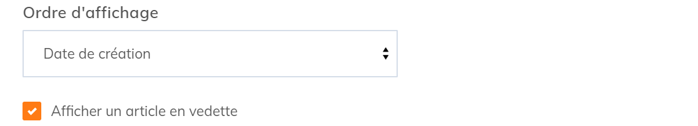
Dans sa configuration, en plus de choisir quels éléments sont affichés sur la page détail des articles, vous pouvez également choisir d'afficher les éléments de votre choix et dans l'ordre de votre choix pour la vue liste. Cochez les éléments que vous voulez voir apparaître sur la vue liste et utiliser l'icône en faisant glisser les champs pour changer leur ordre.
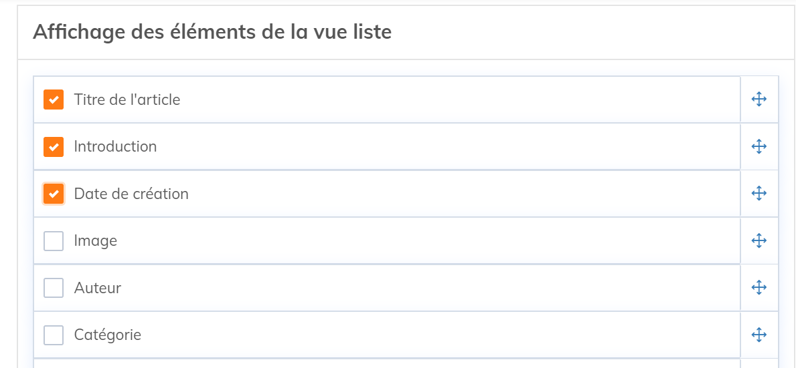
En mode Blogue, la page détail des articles peut contenir un bloc "Autres actualités" qui est également configurable.
| Option | Description |
|---|---|
| Mode d'affichage | Permet de choisir si un bloc D'autres actualités affichant d'autres articles sous forme de liste est affiché sur la page détail d'un article. Permet aussi de choisir l'emplacement de ce bloc. |
| Autres actualités - Titre du bloc | Permet de choisir le titre de ce bloc. Par défaut, il n'y a pas de titre. |
| Libellé du lien de retour vers la liste des articles | Permet de changer le libellé du bouton "Retour à la liste des nouvelles". |
| Afficher la date de création, l'auteur, la catégorie, les mots-clés | Permet de choisir les éléments des autres articles affichés dans bloc "Autres actualités" |
| Nombre d'actualités | Permet de choisir combien d'actualités contient le bloc "Autres actualités" |
| Nombre d'articles avec photo | Permet de filtrer le nombre d'article contenant des images dans le bloc "Autres actualités". |
| Nombre de colonnes | Permet de diviser les articles du bloc "Autres actualités" en colonnes. |
Par défaut le mode blogue redirige l'utilisateur vers une page détail contenant l'article. Cependant, la section Appel à l'action dans la configuration du module permet également la redirection vers une page existante de votre site web.
| Option | Description |
|---|---|
| Page détail | Permet de rediriger, à partir de la liste des articles, vers une autre page existante du site web contenant un module articles multiples plutôt que vers la page détail de l'article. |
| Libellé du lien Lire la suite d'un article | S'il y a redirection vers une page du site, vous pouvez changer le libellé du bouton qui permet la redirection. Par défaut le bouton est représenté par une flèche. |
MODES LISTE DES ACTUALITÉS À GAUCHE OU À DROITE
La différence entre ces modes et le mode Blogue est dans la présentation. Contrairement au Blogue qui offre une liste d'articles, les modes "Liste d'actualités" présentent, selon l'ordre dans lequel vous avez choisi de les afficher, le premier article en entier. Les autres articles sont disponibles sous forme de liste à gauche ou à droite de celui-ci.
Exemple du mode liste des actualités à gauche
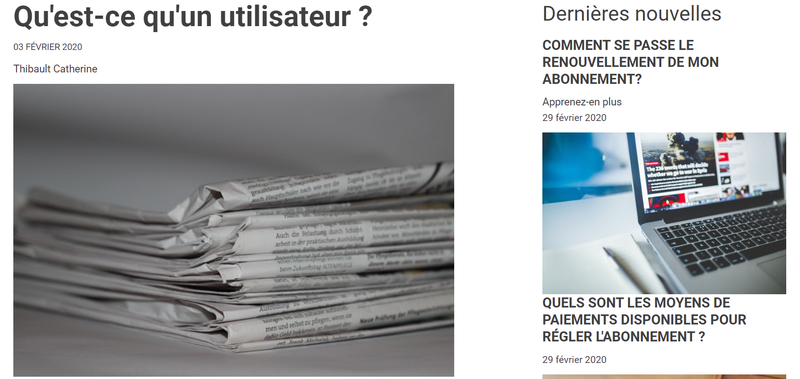
Exemple du mode liste des actualités à droite
Pour le reste, ces deux modes fonctionnent de la même manière que le mode blogue, en affichant vos articles sous forme de liste et en permettant une redirection vers une page détail.
Comme le mode blogue, il permet une configuration personnalisée des éléments de l'article affichés dans la vue liste ainsi que de l'ordre dans lequel ils sont affichés. Il vous permet également de configurer la page détails des articles, le bloc "Autres actualités" présent sur celle-ci ainsi que la redirection.
MODE MOSAÏQUE
Le mode mosaïque permet, comme le mode blogue et les modes liste d'actualité, l'affichage de vos articles sous forme de liste ainsi qu'une redirection vers une page détail. La particularité de ce mode est qu'il permet de présenter la vue liste en plusieurs colonnes.
Ce mode est particulièrement utile si vos articles contiennent des images.
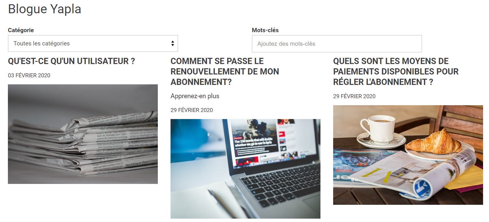
La configuration de ce mode permet de choisir le nombre de colonnes ou, en d'autres mots, combien d'articles contiennent chaque ligne.
Vous pouvez également choisir d'avoir plusieurs pages en activant la pagination.
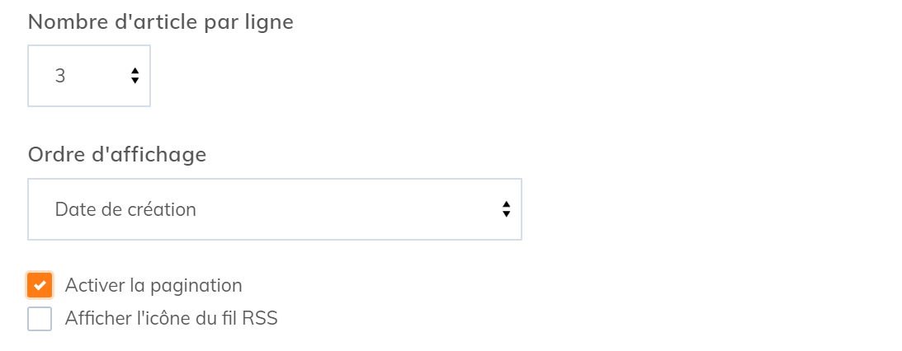
En ce qui concerne la configuration de la vue liste, la page détail et de l'appel à l'action, cela fonctionne de la même manière que celle des autres modes.
Téléchargement des documents
Sur la page détail de vos articles, vous pouvez choisir de ne permettre aucun téléchargement ou bien d'activer la fonction de téléchargement en cochant la case appropriée.
Le téléchargement des documents concerne les articles contenant un document à télécharger.
Le téléchargement est disponible pour les modes qui proposent une redirection vers une page détail, soit tous les modes sauf le mode Accordéon.
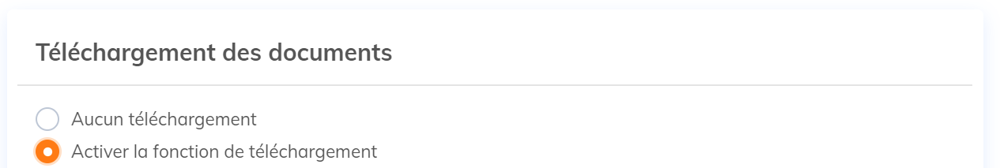
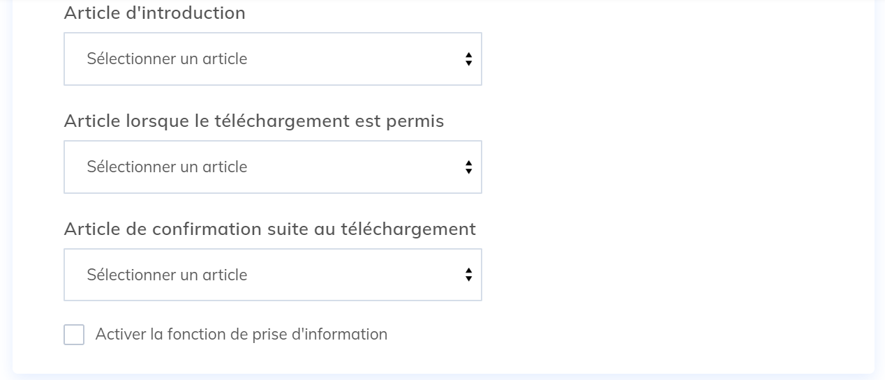
Si vous choisissez d'inclure des téléchargements à vos pages détails, vous pouvez choisir des articles qui seront affichés selon différents contextes.
Vous pouvez également activer la fonction de prise d'information. Vous pouvez choisir quel formulaire sera utilisé pour collecter les informations si vous choisissez le mode non connecté.
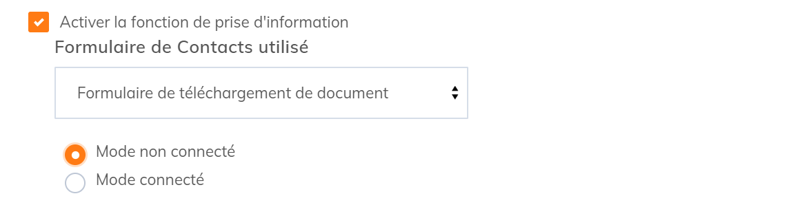
Sur la page détail de l'article, le formulaire de téléchargement apparaîtra sous l'article d'introduction.
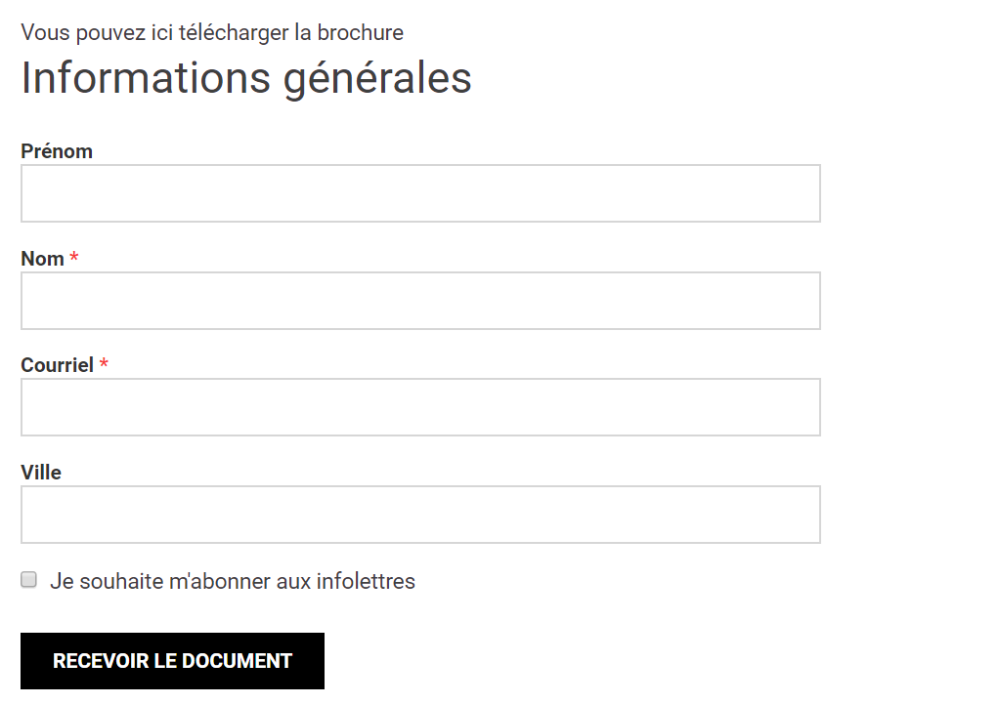
Choisissez le mode connecté pour simplement afficher un module de connexion suivant l'article d'introduction.
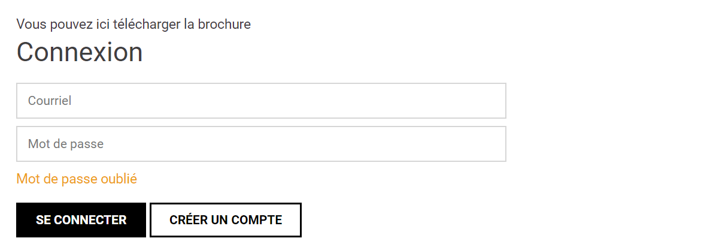
Les articles précédemment choisis seront affichés différemment selon le mode de prise d'information sélectionné:
L'Article d'introduction sera affiché sous le contenu de la page détail de l'article. Il sera le seul affiché si la fonction de prise d'information est désactivée.
L'Article lorsque le téléchargement est permis sera affiché sous le contenu de la page détail de l'article si la fonction de prise d'information est activée avec le mode connecté. L'article remplacera l'article d'introduction une fois le membre connecté. Cet article n'apparaît pas dans les autres modes.
L'Article de confirmation suite au téléchargement sera affiché sous le contenu de la page détail de l'article si la fonction de prise d'information est activée avec les modes non connecté ou connecté. Il remplacera l'article d'introduction ou de permission de téléchargement une fois le document téléchargé.

Commentaires
Vous devez vous connecter pour laisser un commentaire.